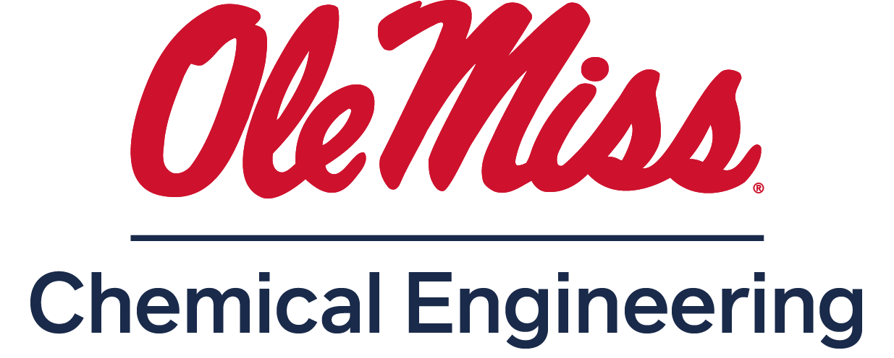

The chemical engineering department offers graduate programs leading to the Master of Science and Doctor of Philosophy degrees in engineering science. These degrees provide the opportunity to tailor a graduate program to the student's interests. Interdisciplinary research opportunities exist in the broad fields of energy, polymeric materials, nanotechnology, separations, environmental engineering, drug delivery, and more.
University of Mississippi 134 Anderson Hall University of Mississippi University, MS 38677
(662) 915-7023
https://chemical.olemiss.edu/acad-graduate-programs/
Nathan Murray nmurray@olemiss.edu (662) 915-2168 olemiss.edu
https://umississippigradschool.university-tour.com/
https://catalog.olemiss.edu/engineering/chemical-engineering/programs
https://international.olemiss.edu/
Assistantships, Fellowships, & Scholarships
Laboratory Policies and Procedures
Graduate Student Annual Evaluation
Graduate Student Academic Standing
Graduate Student Grievance Procedure
The End Game: Preparing to Graduate
Additional Graduate Student Policies
All graduate degree offered by the School of Engineering are degrees in Engineering Science. Both M.S. and Ph.D. are available. This document describes details specific to the Emphasis in Chemical Engineering. Some graduate students may find an interdisciplinary path more suitable to their needs in emphasis areas such as Environmental Engineering, Materials Science and Engineering, and Aeroacoustics. Consult the Graduate Program Catalog for details about these other emphasis areas, or reach out to the graduate program coordinator listed at gradschool.olemiss.edu/apply-now/graduate-programs-and-deadlines/.
A degree of M.S. in Engineering Science with an Emphasis in Chemical Engineering prepares graduates to apply chemical engineering science (transport phenomena, thermodynamics, chemical reaction engineering, and applied mathematics. It enables them to independently execute complex projects and pursue successful careers in engineering, medicine, law, professional education, public policy, the military, management, and sales.
The M.S. in engineering science with an emphasis in chemical engineering requires a minimum of 30 hours of graduate credit. The specific coursework depends on the M.S. option pursued by the student. All M.S. students should be able to demonstrate proficiency in transport phenomena,thermodynamics, and chemical reaction analysis. This is accomplished by completion and approval of the chemical engineering proficiency form prior to graduation.
All 30 hours come from graded 500-/600- level coursework agreed upon by the student and his or her committee, but must include at least two Ch E 510+ courses (6 credit hours).
Students whose undergraduate degree is not in chemical engineering may be required to take additional coursework beyond the 30-hour requirement at the discretion of his or her committee.
This option requires at least 27 hours of graded 500-/600-level coursework agreed upon by the student and his or her committee including at least two Ch E 510+ courses (6 credit hours). In addition, students must complete no less than 3 hours of project (Engr 693 and Engr 694) credit.
Students must take 21 hours of graded 500-/600- level coursework, plus 3 hours of Research Seminar (Ch E 515). The coursework must include no less than 6 hours selected by the student's committee from any Ch E course 510 or higher. The remaining 15 hours of coursework are agreed upon by the student and his or her committee. All students in the M.S. thesis option must take or have taken at least one course in each of the following topics: reactors design, thermodynamics and transport as graduate or undergraduate students. In addition, students must complete no less than 6 hours of thesis (Engr 697) credit.
Every candidate for a master’s degree must pass a final written or oral examination.
A Ph.D. in engineering science with emphasis in chemical engineering prepares graduates to apply chemical engineering science (transport phenomena, thermodynamics, chemical reaction engineering, and applied mathematics). It enables them to independently execute complex projects and pursue successful careers in engineering, medicine, law, professional education, public policy, the military, management, and sales. It further equips them with the experience to conduct research —generating and disseminating new knowledge.
The Ph.D. with an emphasis in chemical engineering requires a minimum of 54 hours of graduate credit past the bachelor's degree. No specific courses are required beyond those specified for the M.S. thesis option. The remainder of the coursework is agreed upon by the student and his or her committee, 18 hours of which must be dissertation (Engr 797) credit. Students whose undergraduate degree is not in chemical engineering may need to take additional courses to satisfy prerequisites.
Students in the Ph.D. track must achieve a GPA of 3.25 or higher on 12 credit hours selected by the committee from Engr 665, Engr 669 or any Ch E 500-/600-level course. Selection must be done by the end of the first semester. To be admitted to candidacy, the student must successfully complete the preselected courses and pass a "qualifying examination." To qualify for Ph.D. candidacy, students must write and defend an original research proposal (ORP). More information about the ORP can be found in the Ph.D. Candidacy section. Those who successfully complete the ORP will be considered Ph.D. candidates. Following the ORP, candidates must then complete a dissertation prospectus and successfully defend their dissertation.
APPLY NOW Prospective students should apply through the Graduate School's online portal. Applicants will be ask to select their desired emphasis area during the application process. For degrees in Chemical Engineering, applicants should select the Chemical Engineering emphasis area.
Applications for Fall entry are due April 1. Applications for Spring entry are due October 1.
APPLICATION FEE: This application fee is required.
Students admitted to the graduate programs in chemical engineering usually have undergraduate degrees in chemical engineering or a closely related field. For students with undergraduate degrees in the physical sciences (chemistry, physics, etc.), the admissions review process looks for strong performance in thermo-fluids, mathematics, physics, and chemistry. In some cases, the reveiw committee may recommend the applicant complete several undergraduate courses to make up for deficiencies in certain areas before full admission. Prospective students in this situation may be accepted as qualifying students and should contact the Department to work out an individualized curriculum.
MINIMUM QUALIFICATIONS: A successful applicant will have a Batchelor degree in Chemical Engineering, Chemistry, Physics, or a closely related STEM field.
RESUME REQUIRED: The applicant must provide a CV or resume, including contact information of at least two professional references.
INTEREST STATEMENT REQUIRED: The application must provide a written statement of research interests and future goals. These are reviewed with a keen interest in a student’s research plan and prior academic preparation.
TRANSCRIPT REQUIRED: Applicants may submit unofficial transcripts for review by the committee. If admission is granted, the Graduate School will require official transcripts prior to enrollment.
GPA: Successful applicants typically have above 3.0 GPA on a 4.0 scale (US Academic), but all applications that meet the above minimum qualifications will be reviewed.
GRE: The GRE is not required. You are welcome to submit your GRE; however, the review committee will not base admission decisions on the GRE.
ENGLISH LANGUAGE PROFICIENCY (for international students): https://international.olemiss.edu/ https://international.olemiss.edu/english-language-proficiency-test-exemption-list/.
Applications will be reviewed by a faculty committee to assess the required application materials, the student’s academic preparation, and alignment of research interests with department research priorities.
All graduate students admitted to the program will be considered for financial support contingent upon funding availability. Continued financial support is dependent upon funding availability and demonstrated performance.
Application for a graduate assistantship/instructorship should be made directly to the academic department in which the applicant will pursue a degree. The graduate school offers general information about assistantships at gradschool.olemiss.edu/prospective-students/financial-aid-information/. Funding for assistantships is dependent on departmental and/or research funds availability.
Graduate School Assistantships Details
Students who are offered and accept a research assistantship (RA) position must work as a RA each semester with which they receive support. The RA position will consist of no more than 25 hours of assisting a faculty instructor on a funded research project. This research project may or may not be the primary doctoral research project in which a student is assessed for candidacy or degree completion.
Prospective students should directly contact the faculty member whose focus area best matches the student's interests. Contact information is at https://chemical.olemiss.edu/about/faculty_staff.html. Research focus areas are listed below:
Dr. Lopez: Membranes, Ionic Liquid Composite Materials, Molecular Transport
Dr. Murray: Fluid/Acoustic Interactions, Gas-Solid Two-Phase Flows, Combustion/Turbulence Dynamics
Dr. Nouranian: Multi-Functional Nanocomposites, Interfacial Science, Graphene
Dr. Prager: Coatings, Interfacial Sciences, Soil Remediation
Dr. Reinemann: Biophysics, Cytoskeleton Mechanics, Microscopy
Dr. Smith: Polymers, Biomaterials
Dr. Villacorta: Functional Nano-Composites, Advanced Material Processing
Dr. Werfel: Cancer Nanotechnology, Drug Delivery, Cellular Biology
Students who are offered and accept a teaching assistantship (TA) position must work as a TA each semester with which they receive support. The TA position will consist of no more than 25 hours of assisting a faculty instructor on a course in the department. Duties can include but are not limited to: preparing and delivering lectures to undergraduate students, maintaining a course website, grading course assignments, providing feedback to students on coursework, holding office hours to assist students, proctoring course exams. In addition to receiving a TA stipend, recipients of a TA will also be extended a graduate tuition waiver.
Prospective students seeking teaching assistantships should indicate their interest as part of their written Statement of Research Interests and Future Goals. The Statement is required and must be uploaded with the student's application materials.
Graduate students can also apply for external grants, awards and fellowships. These funds can be obtained from national, state and local organizations, foundations and agencies.
pathwaystoscience.org provides information on numerous graduate fellowship opportunities. Graduate faculty may provide assistance to help a graduate students apply for such opportunities. If these opportunities are of interest to you, open a discussion directly with a research faculty in the department with, "I'm interested in attending OleMiss and I am applying for the [fill in fellowship opportunity name] fellowship. Would you be willing to provide support for my application?"
The Graduate School administers graduate recruiting fellowships and scholarships (including for academic excellence and excellence in inclusivity), dissertation fellowships and Summer Graduate Research assistantships.
Dissertation Fellowship Program
University of Mississippi Recruiting Fellowship and Scholarship Program
Summer Graduate Research Assistantship Program
Graduate assistants with appointments of 1/4 time or higher are required to participate in a health insurance program.* Enrollment and payroll deduction of premiums will be automatic upon appointment for each fall and spring term. Premiums will be subsidized by the university.
Graduate Student Health Insurance Information
*Graduate assistants may request a waiver from participation in the above-sponsored group plan if they already have comparable health insurance.
The door to the laboratory must be kept closed at all times. In addition, the entrance must be adjusted such that a key is required to enter at all times.
Safety glasses are required within the laboratory at all times. If wearing contacts, a small dot must be placed on the side of your laboratory glasses to notify others in case of an emergency.
Lab gloves must be disposed of before leaving the laboratory. Lab gloves may not be disposed of in a waste container outside of the laboratory.
Long pants and closed-toed shoes are required at all times in the lab. In addition, lab coats are required when handling hazardous chemicals. Lab coats must never be worn outside the lab.
Occupation of the lab is only permissible when conducting experiments or using equipment that is present in the lab. Working on homework, manuscripts, or general socializing shall be done outside of the laboratory.
No food or drink can be brought into any laboratory.
Any instruction given by a faculty member concerning laboratory procedures and safety must be followed.
It is strongly recommended that all organic chemicals (and chemicals that exhibit significant fumes) be handled within the fume hoods.
Fume hood sashes shall be lowered when direct access to the fume hoods is not necessary. In addition, the accumulation of glassware and equipment should be avoided. Exceptions include installed structures, equipment, and glassware (i.e. Schlenk lines).
Use of specialty equipment within the laboratory is limited to individuals trained in its use. If training is required, approval is needed from the faculty member who owns and maintains the required equipment. This approval and training is required for unsupervised use of the equipment.
Use of consumables, solvents, and chemicals is limited to only those within the research group where they were purchased. Sharing of supplies is allowed (and encouraged), however, use of supplies must be cleared by each faculty member to which the supplies belong. If supplies or equipment are taken out of the lab for whatever reason, the faculty member who owns the material must be notified and approval received before such adjustments. Any material that is used without permission must be replenished by the faculty advisor using his/her available funds.
All samples and synthesized chemicals must be labeled with the chemical, name of generator, and date generated. These materials must be stored in a safe place, preferably a storage drawer or the appropriate hazardous storage location (e.g. acid, flammables, or corrosive cabinet) with the generator’s name on it.
Each laboratory must contain a folder containing SDS information for all hazardous chemicals stored within that laboratory. This folder must be updated after receipt and storage of a new hazardous chemical in the laboratory. Every semester, faculty and graduate researchers must update SDS information via a chemical audit to ensure proper documentation of all chemicals stored within the laboratory.
A procedural risk assessment is required before any new chemical synthesis or analytical procedure where hazardous chemicals or conditions will be used. A risk assessment is also required before any significant changes to an existing chemical synthesis or analytical procedure. This risk assessment must be approved by the primary faculty advisor before conducting the procedure.
Benchtops and work areas must be kept clean and clear of clutter such that others may work in the lab when necessary. Accumulation of equipment and materials on the benchtops must be minimized to ensure proper workspace.
All glassware must be cleaned and placed on a drying rack upon completion of its use. Once dry, glassware should be moved to a storage cabinet for safekeeping.
It is the responsibility of undergraduate and graduate researchers to dispose of any non-hazardous waste (i.e. garbage and boxes) that accumulates in the lab. This must be conducted at a minimum every week. A student rotation will be in effect for each lab to ensure every researcher contributes to the general cleanliness of the laboratories.
All hazardous waste must be disposed of in either the aqueous waste, organic waste, or a specialty container with a hazardous label. Specialty waste must then be placed in the satellite accumulation area within the lab which generated the waste. No other area is acceptable for the storage of hazardous waste. Once specialty waste has been collected, laboratory services must be contacted so that they can pick up the waste (every month). This also applies when the aqueous and/or organic waste containers are filled.
A minor violation consists of any disregard to the above rules which does not create an immediate safety risk to the researcher or other researchers within the laboratory.
1st Offense – Written infraction form signed by the researcher and primary faculty advisor. Suspension from the lab for the day.
2nd Offense – Written infraction form signed by the researcher, primary faculty advisor, and departmental chair. Suspension from the lab for the week.
3rd Offense – Written infraction form signed by the researcher, primary faculty advisor, and departmental chair. A research committee meeting will be called to discuss removal from the program. Suspension from the lab for 2 weeks.
Subsequent Offense – Removal from the departmental program
A major violation consists of any disregard to the above rules which creates an immediate safety risk to the researcher or other researchers within the laboratory.
1st Offense – Written infraction signed by the researcher, primary faculty advisor, departmental chair. The research committee will be notified via email of the violation. Suspension from the lab for 2 weeks.
2nd Offense – Removal from the departmental program.
To become a Ph.D. candidate in Engineering Science with an Emphasis in Chemical Engineering, graduate students must pass a qualifying exam. This requirement is fulfilled by writing and defending an original research proposal (ORP). The ORP serves two purposes: to help students learn how to write a proposal and to evaluate their ability to conceive an original research project while demonstrating mastery of the required academic material.
General guidelines are provided for students to follow in order to successfully complete the ORP. These guidelines are designed to help students develop a strong proposal that meets the necessary requirements. After completing the ORP, students will then proceed to the dissertation prospectus and ultimately to the dissertation itself.
To successfully pass the ORP, students must demonstrate the ability to do the following:
State a research problem taking into consideration existing literature;
Write a hypothesis and/or goals related to the research problem;
Describe the intellectual merit of the proposed research;
Develop a research plan to solve or address the problem;
Account for resource and time requirements necessary to achieve the proposed research goals;
Contextualize the broader impacts of the proposed research; and
Communicate effectively their proposed research in a written and verbal form.
Before starting the ORP, a student must have satisfactorily completed: (1) all core course requirements with an average GPA of 3.25 or higher; (2) a minimum of three credit hours of seminar; and (3) at least three full academic semesters after admission into the graduate program in the Department of Chemical Engineering. Per Graduate School regulations, the student must also have a cumulative graduate GPA of 3.0 or higher and must not have an outstanding I grade.
Once all of the above conditions have been met, the student and her/his advisor must select the evaluation committee for the ORP. It must include at least one full member of the graduate faculty (i.e. Associate or Full Professor).
The student must submit the ORP topic to the evaluation committee by email at least 3 months before submitting the written document. It can be related to their field of research, but not provided by any member of the faculty. The committee must approve or reject the topic within one week after submission. If the topic is rejected, the student must provide a new topic within two weeks after the original decision was made.
The written document must be submitted to the evaluation committee at least two weeks before the oral defense. The document must adhere to the National Science Foundation (NSF) guidelines described later on this document.
Immediately after the oral defense, the committee will deliberate and assign a pass, conditional pass, or fail grade.
If the student receives a conditional pass, he/she will have two weeks to correct the ORP and resubmit it.
If the student fails, she/he must resubmit the written ORP on the same topic no earlier than three months after the original defense. The student can modify the general idea, but within the topic that was already approved by the committee.
If a student fails twice, he/she cannot be admitted to candidacy.
The following guidelines were taken in part from those used by the NSF for writing proposals and should be used to assist students in preparing research proposals for the Ph.D. candidacy examination. Students are encouraged to examine the latest version of the National Science Foundation Proposal and Award Policies and Procedures Guide (PAPPG) available online.
The proposal must contain a summary of the proposed activity suitable for publication on the NSF website, not more than one page in length. It should not be an abstract of the proposal, but rather a self-contained description of the activity that would result if the proposal was funded. The summary should be written in the third person and must address in separate statements (within the one-page summary):
an overview including a description of the activity that would result if the proposal was funded and a statement of objectives and methods to be employed;
the intellectual merit of the proposed activity, describing its potential to advance knowledge; and
the broader impacts resulting from the proposed activity, which should describe the potential to benefit society and contribute to the achievement of specific, desired societal outcomes.
It should be informative to chemical engineers and understandable to a scientifically literate lay reader.
A Table of Contents must be included. The table of contents is not included in the page limitations of the proposal.
Content
The Project Description should provide a clear statement of the work to be undertaken and must include: objectives for the period of the proposed work and expected significance; relation to longer-term goals of the proposed project; and relation to the present state of knowledge in the field, to work in progress elsewhere.
The Project Description should outline the general plan of work, including the broad design of activities to be undertaken, and, where appropriate, provide a clear description of experimental methods and procedures. It must describe as an integral part of the narrative, the broader impacts resulting from the proposed activities, addressing one or more of the following as appropriate for the project: how the project will integrate research and education by advancing discovery and understanding; how the results of the project will be disseminated broadly to enhance scientific and technological understanding; and potential benefits of the proposed activity to society at large.
Page Limitations
Brevity assists the faculty in dealing effectively with proposals. Therefore, the Project Description must be single-spaced, at least 10 pages, and may not exceed 15 pages. Visual materials, including charts, graphs, maps, photographs, and other pictorial presentations are included in the page limitation. Students are cautioned that the project description must be self-contained and that URLs that provide information related to the proposal should not be used because 1) the information could circumvent page limitations, 2) the examiners are under no obligation to view the sites, and 3) the sites could be altered or abolished between the time of submission and the time of review. Conformance to the page limitation will be strictly enforced. Proposals that do not meet this page limitation will be returned with the expectation that the document will be re-submitted in the correct format more than two weeks before the proposal defense date.
Reference information is required to support the information presented in the body of the proposal. Each reference must include the names of all authors (in the same sequence in which they appear in the publication), the article and journal title, book title, volume number, page numbers, and year of publication. Students must be especially careful to follow accepted scholarly practices in providing citations for source materials relied upon when preparing any section of the proposal. While there is no established page limitation for the references, this section must include bibliographic citations only and must not be used to provide parenthetical information outside of the 15-page project description.
A budget for the proposed project must be included. The budget should follow the format laid out by the Office of Research and Sponsored Programs (ORSP) of the University of Mississippi for an NSF proposal. In general, all proposals must include an itemized budget that is reasonable for the completion of the project. Budgets should be limited to $100,000 per year, over a two-year period. Reasonable equipment charges may be requested. Based on the budget limit, reasonable equipment costs may typically be between $5,000 and $10,000; however, higher requests can also be acceptable. All equipment costs must be adequately justified. Indirect costs, fringe rates, and tuition remission costs should match those used by the University of Mississippi; these can be found on the UM ORSP website.
The proposal must be paginated, beginning with the summary as page 1 and ending with the budget as the last page.
The proposal must be clear, readily legible, and conform to the following requirements:
Use of only the approved typefaces identified below, a black font color, and font size of 12 points or larger must be used:
For Windows users: Arial, Helvetica, Palatino Linotype, Georgia, or Times New Roman
For Macintosh users: Arial, Helvetica, Palatino, Georgia, or Times New Roman
A Symbol font may be used to insert Greek letters or special characters, however, the font size requirement still applies.
Text must be single space.
Margins, in all directions, must be at least an inch.
The proposer must use only a standard, single-column format for the text. Avoid using a two-column format since it can cause difficulties when reviewing the document.
The guidelines specified above establish the minimum type size requirements; however, PIs are advised that readability is of paramount importance and should take precedence in the selection of an appropriate font for use in the proposal. Small type size makes it difficult for reviewers to read the proposal; consequently, the use of small type not in compliance with the above guidelines may be grounds for the return of the proposal without review.
As in any proposal for which you are asking someone to put up real money, the basic idea must be convincing; it must be novel, creative, interesting, and must show potential for success. The proposal should address a fundamental scientific question. The topic can be related to the student's field of research, but not provided by any faculty and approved by the evaluation committee. Students are not allowed to receive any substantial help from their research advisor(s). However, students ask questions to other members of the faculty, including committee members, to assist with general questions related to the ORP. The following comments should also help develop the proposal.
Getting ready for ORP
It is highly recommended that you think about the topic well ahead of time and read the available literature thoroughly before submitting a topic to the committee. You should start planning your ORP approximately 3 months before submitting the topic. Remember that reading papers should be done routinely while pursuing a Ph.D.
The three months between submitting the topic and the written ORP is a minimum recommended amount of time a student should spend writing the document. It is recommended that students spend between 3 and 6 months developing the ORP, from the initial conception of the idea to submitting the written document.
It is recommended that you start by thinking about the “big picture” and then “fill in” the details. A good proposal starts with well-defined goals and objectives.
Many reviewers consider that a good proposal is driven by a strong hypothesis. This hypothesis should have a sound scientific foundation based on current literature.
Do not present an idea that is only an incremental modification of an existing concept, method, or idea. An excellent idea can help make up for poor implementation or missing components, but a poor idea cannot be saved by fancy footwork.
Your ideas must be defensible. Ask yourself, a) Does this make sense? b) Has anyone done this before? c) Does anyone care if I do this or not? d) Why is it important?
Writing your ORP
Make sure the narrative of the proposal flows smoothly. A document that is well organized and easy to read is more likely to be successful.
Break up long sentences and paragraphs; short sentences are usually easier to read.
Avoid redundant words, phrases, or sentences. However, it is desirable to emphasize the main ideas of the proposal in several locations of the narrative. Do not be afraid to use bold and italicized sentences that describe the most significant aspects of your proposal.
You should never submit the first complete draft of the ORP. Read your draft multiple times, and edit it. Spend a couple of days without thinking about it, then read it again and edit it.
Remember that you are still required to work on your research and courses while developing the ORP.
Defending the ORP
It is recommended that you plan a 30 min presentation to allow for 30 min of questions and answers.
Number all your slides.
Use plenty of visual aids. It is usually better to have few words in a slide. Make sure ALL text is large enough to be seen from the back of the room; this includes figure legends, axis titles, footnotes, etc.
Make sure that you follow best practices of professionalism and visual presentation.
Practice your defense multiple times. Pay close attention to the transitions. Make sure it flows well. Your presentation should keep the attention of the evaluation committee while effectively communicating your proposed research.
Know the background science. This is also an examination of your basic knowledge and understanding of chemical engineering principles.
Graduate students shall meet with their advisor and/or research director for evaluation at least once each year. Ideally, the student and advisor will meet regularly for discussion of research objectives, outcomes, and progress. The annual evaluate serves as a means of providing constructive feedback to the student on the progress being made so that the expectations of the student are clearly articulated through the graduate education process.
Forms for the annual evaluation are available ... These are saved as individual DOCX templates that will be posted to Box and made available on the web. Once published, the links will appear here for access.
There are four different categories of academic standing based on a student’s academic performance: good standing, academic probation, academic suspension, or academic dismissal. Probation, suspension, and dismissal become effective at the end of the semester in which the student fails to attain an adequate GPA. Although the student will usually receive official notification of such action, notification is not a prerequisite to the student’s being placed on probation, suspended, or dismissed. It is the student’s responsibility to ascertain his or her academic status before the beginning of each semester.
A student will be in good standing and remain in good standing when his or her cumulative GPA is 3.00 or higher. Further, a student must be making adequate degree progress as indicated by his or her annual student evaluation to remain in good standing.
Students enrolled in a graduate program (master’s or doctoral) will be placed on academic probation at the end of the semester when their cumulative GPA falls below 3.0. Failure to raise their cumulative GPA to 3.0 in the following semester of enrollment will result in disqualification.
Graduate students may also be placed on academic probation if he/she receives an unsatisfactory annual evaluation from their primary advisor. This probationary condition must be reviewed and approved by the graduate student’s committee and made official via a formal letter to the department head or graduate program coordinator indicating the probationary status. The letter must indicate necessary steps for the graduate student to complete within the next semester to achieve good standing and avoid disqualification.
Students on probation will be dismissed if, at the end of their next semester of enrollment, their cumulative GPA remains below 3.0 or they fail to meet performance conditions set by their committee after receiving an unsatisfactory annual evaluation. Graduate students who have been dismissed are ineligible for teaching or research assistantships. Graduate students who have been dismissed are ineligible for future enrollment in the department.
Graduate students within our department do not undergo a suspension period. Any subsequent repercussions for poor performance during a probationary period will result in student dismissal from the program.
Students within the department may be dismissed from the department and graduate program for one of several reasons including
Failure to make adequate academic progress during a probationary period
Repeated laboratory safety policy violations
Failure to complete doctoral candidacy examination after two attempts
Failure to complete doctoral dissertation defense after two attempts
Other student conduct violations as reviewed by the graduate student committee
Graduate students who are dismissed from the program will be notified by letter from the Graduate Program Coordinator indicating the date of dismissal. Any graduate stipend from a graduate assistantship or fellowship provided by the University will be withheld beyond the dismissal date. Tuition charges may result from student dismissal and are the sole responsibility of the graduate student. A dismissed graduate student will be unable to enroll in the department or School of Engineering for any subsequent semester.
Graduate students have the right to file grievances about the conduct or behavior performed on the part of the institution or by any of its agents. The UMatter: Student Support & Advocacy Office maintains the process for the review of, response, and attempted resolution of academic, non-academic, or general complaints for students. The grievance process encourages the use of an informal resolution process to resolve complaints. It also provides a formal resolution process and protocol that may be utilized by students when a grievance is not resolved through the informal process.
The Graduate School provides an excellent Step by Step Checklist that details all the required steps to graduate. The graduation requirements are enforced by the Graduate School and not by the Department of Chemical Engineering nor the School of Engineering. Therefore, the Graduate School deadlines are firm. No exceptions are made to the deadlines, so plan accordingly. Do not expect your advisor or graduate program coordinator to keep up with these details on your behalf.
It is strongly recommended that any prospective or current graduate student within our program review the following policies on the University website.
Graduate Student Health Insurance
Graduate Student Financial Aid
Graduate Student Forms Library
An illustrated and interactive Campus Map is available to help orient new students to the location of buildings and services around campus. Buildings of interest include
Brevard Hall, Engineering Dean’s Office
Graduate House, Office of the Graduate School
Martindale, Student Services, the Office of Global Engagement and International Programs
Anderson Hall, Department of Chemical Engineering
Johnson Commons, ID Center